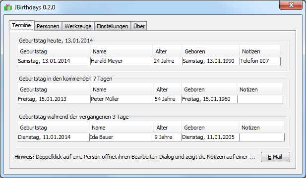

JBirthdays Home Page
JBirthdays is a platform independent application that informs about:
- Birthdays at the present day
- Birthdays in the next days
- Past birthdays

Other features
- Export to iCal format for usage in calendar applications such as Lightning or Google Calendar
- Send email to persons having birthday at the present day
- Export and import for backup and data exchange with other JBirthdays applications
System requirements of JBirthdays
You need a Java Runtime Environment (JRE), version 1.7 (7) or higher (Download).
Languages
- English
- German (Deutsch)
Usage (License)
JBirthdays is free for "private persons" or "commercials" as long as it will be used for managing birthdays. It's not intended ("allowed") to sell it as single program or as part of a collection of programs.
Author: Elmar Baumann
Write e-Mail
Status of this document: 2014-01-12